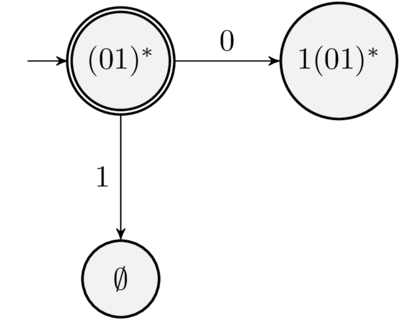
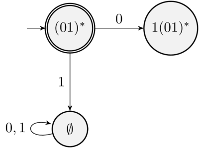
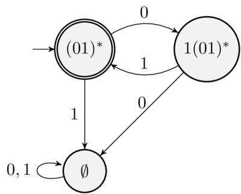

nullable :: Regex -> Bool nullable Empty = False nullable Lambda = True nullable (Chr _) = False nullable (e1 :+: e2) = nullable e1 || nullable e2 nullable (e1 :@: e2) = nullable e1 && nullable e2 nullable (Star e1) = True
(.+.) :: Regex -> Regex -> Regex Empty .+. e' = e' e .+. Empty = e e .+. e' = e :+: e'
(.@.) :: Regex -> Regex -> Regex Empty .@. _ = Empty _ .@. Empty = Empty Lambda .@. e' = e' e .@. Lambda = e e .@. e' = e :@: e'
star :: Regex -> Regex star Empty = Lambda star (Star e) = e star e = Star e
deriv :: Char -> Regex -> Regex deriv _ Empty = Empty deriv _ Lambda = Empty deriv a (Chr b) | a == b = Lambda | otherwise = Empty deriv a (e1 :+: e2) = deriv a e1 .+. deriv a e2 deriv a (e1 :@: e2) | nullable e1 = deriv a e1 .@. e2 .+. deriv a e2 | otherwise = deriv a e1 .@. e2 deriv a (Star e1) = deriv a e1 .@. (star e1)
match :: Regex -> String -> Bool match e [] = nullable e match e (c : cs) = match (deriv c e) cs
{ module Arith.Lexer (lexer, testLexer) where }
Tokendata Token = TNumber Int | TVar String | TAdd | TMul | TLParen | TRParen deriving (Eq, Show)
alexScanTokens gerada automaticamente.lexer :: String -> [Token] lexer = alexScanTokens testLexer :: IO () testLexer = do s <- getLine let tokens = lexer s mapM_ print tokens
$digit = 0-9 -- digits $alpha = [a-zA-Z] -- alphabetic characters
@identifier = $alpha[$alpha $digit]* -- identifiers @number = $digit+
tokens :-
$white+ ; -- removing whitespace
"//".* ; -- removing line comments
@number { \ s -> TNumber (read s) }
@identifier { \ s -> TVar s }
\+ { \ _ -> TAdd }
\* { \ _ -> TMul }
\( { \ _ -> TLParen }
\) { \ _ -> TRParen }
Arith/Lexer.x contém a especificação.Arith/Lexer.hsalex Lexer.x